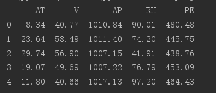
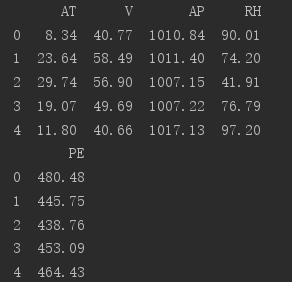
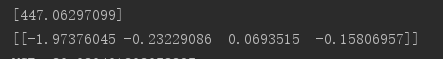
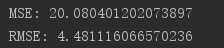
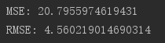
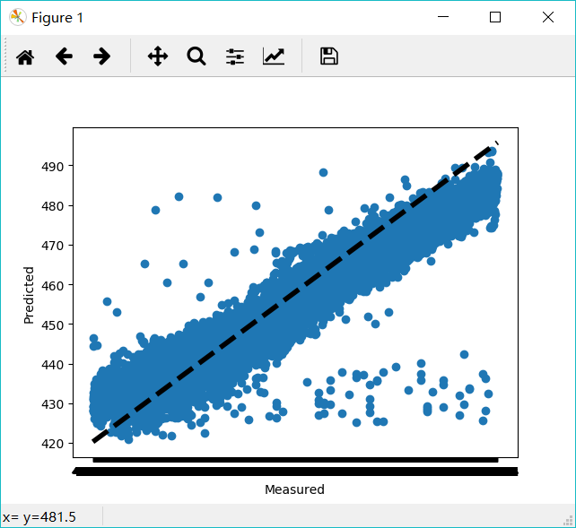

用scikit-learn和pandas学习线性回归
这段时间准备将几个传统的机器学习模型给重新复习一遍，今晚便是针对回归分析的复习，主要去做了刘建平老师的博客的一个实例，熟悉scikit-learn和pandas，下面进入正题。
1.获取数据，定义问题
数据的介绍在这： http://archive.ics.uci.edu/ml/datasets/Combined+Cycle+Power+Plant
数据的下载地址在这： http://archive.ics.uci.edu/ml/machine-learning-databases/00294/
里面是一个循环发电场的数据，共有9568个样本数据，每个数据有5列，分别是:AT（温度）, V（压力）, AP（湿度）, RH（压强）, PE（输出电力)。我们不用纠结于每项具体的意思。
我们的问题是得到一个线性的关系，对应PE是样本输出，而AT/V/AP/RH这4个是样本特征， 机器学习的目的就是得到一个线性回归模型，即:
PE=θ0+θ1∗AT+θ2∗V+θ3∗AP+θ4∗RHPE=θ0+θ1∗AT+θ2∗V+θ3∗AP+θ4∗RH
而需要学习的，就是θ0,θ1,θ2,θ3,θ4θ0,θ1,θ2,θ3,θ4这5个参数。
2.整理数据
下载后的数据可以发现是一个压缩文件，解压后可以看到里面有一个xlsx文件，我们先用excel把它打开，接着“另存为“”csv格式，保存下来，后面我们就用这个csv来运行线性回归。
打开这个csv可以发现数据已经整理好，没有非法数据，因此不需要做预处理。但是这些数据并没有归一化，也就是转化为均值0，方差1的格式。也不用我们搞，后面scikit-learn在线性回归时会先帮我们把归一化搞定。
3.用pandas来读取数据
先把要导入的库声明了：
1 | import matplotlib.pyplot as plt |
接着我们就可以用pandas读取数据了：1
2#read_csv里面的参数是csv在你电脑上的路径，此处csv文件放在目录下面的data目录里
data = pd.read_csv('./data/ccpp.csv')
接着读取数据，结果如图所示1
2#读取前五行数据，如果是最后五行，用data.tail()
print(data.head())

4.准备运行算法的数据
我们看看数据的维度1
data.shape
结果是(9568, 5)。说明我们有9568个样本，每个样本有5列。
现在我们开始准备样本特征X，我们用AT， V，AP和RH这4个列作为样本特征。1
2
3
4
5
6data.shape
X = data[['AT', 'V', 'AP', 'RH']]
print(X.head()) # 可以看到X的前五条输出
#接着我们准备样本输出y， 我们用PE作为样本输出
y = data[['PE']]
print(y.head()) # 可以看到y的前五条输出

5.划分训练集和测试集
1 | from sklearn.model_selection import train_test_split #划分训练集和测试集 |
结果如下：
(7176, 4)
(7176, 1)
(2392, 4)
(2392, 1)
可以看到75%的样本数据被作为训练集，25%的样本被作为测试集。
6.运行scikit-learn的线性模型
1 | # scikit-learn的线性回归算法使用的是最小二乘法来实现的 |

7.模型评价
我们需要评估我们的模型的好坏程度，对于线性回归来说，我们一般用均方差或者均方根差在测试集上的表现来评价模型的好坏1
2
3
4
5
6
7# 看看我们的模型的MSE和RMSE
# 模型拟合测试集
y_pred = linreg.predict(X_test)
# 用scikit-learn计算MSE
print("MSE:",metrics.mean_squared_error(y_test, y_pred)) # MSE是均方误差
# 用scikit-learn计算RMSE
print("RMSE:",np.sqrt(metrics.mean_squared_error(y_test, y_pred))) # RMSE是均方根误差

输出如下：
MSE: 20.0804012021
RMSE: 4.48111606657
得到了MSE或者RMSE，如果我们用其他方法得到了不同的系数，需要选择模型时，就用MSE小的时候对应的参数。
比如这次我们用AT， V，AP这3个列作为样本特征。不要RH， 输出仍然是PE。代码如下:
1 | X = data[['AT', 'V', 'AP']] |
输出如下：
MSE: 23.2089074701
RMSE: 4.81756239919
可以看出，去掉RH后，模型拟合的没有加上RH的好，MSE变大了。
8.交叉验证
我们可以通过交叉验证来持续优化模型，代码如下，我们采用10折交叉验证，即cross_val_predict中的cv参数为10：1
2
3
4
5
6
7
8X = data[['AT', 'V', 'AP', 'RH']]
y = data[['PE']]
from sklearn.model_selection import cross_val_predict
predicted = cross_val_predict(linreg, X, y, cv=10)
# 用scikit-learn计算MSE
print("MSE:",metrics.mean_squared_error(y, predicted))
# 用scikit-learn计算RMSE
print("RMSE:",np.sqrt(metrics.mean_squared_error(y, predicted)))

可以看出，采用交叉验证模型的MSE比第一次的大，主要原因是我们这里是对所有折的样本做测试集对应的预测值的MSE，而第一次仅仅对25%的测试集做了MSE。两者的先决条件并不同。
9.画图观察结果
这里画图真实值和预测值的变化关系，离中间的直线y=x直接越近的点代表预测损失越低。代码如下：1
2
3
4
5
6fig, ax = plt.subplots()
ax.scatter(y, predicted)
ax.plot([y.min(), y.max()], [y.min(), y.max()], 'k--', lw=4)
ax.set_xlabel('Measured')
ax.set_ylabel('Predicted')
plt.show()

10.完整代码
1 | #-*- coding: utf-8 -*- |